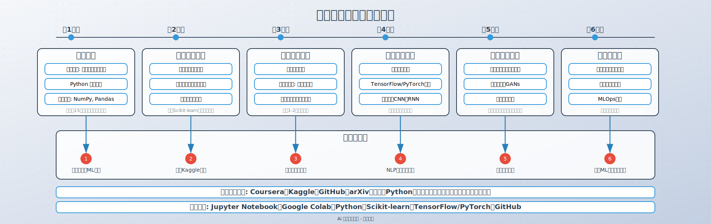

用大模型学机器学习

引言：为什么用大模型学习机器学习？
随着大型语言模型（LLM）如GPT-4的出现，学习机器学习的方式正在发生革命性变化。大模型不仅可以解释复杂概念，还能根据个人学习进度提供定制化指导，极大地提高学习效率。本文将分享如何利用大模型构建个性化的机器学习学习路径。
第一阶段：基础知识构建（1-2个月）
数学基础
机器学习需要一定的数学基础，包括线性代数、概率统计和微积分。使用大模型可以：
- 解释抽象数学概念，如特征值、矩阵分解等
- 提供针对性练习和问题解答
- 将数学概念与机器学习应用联系起来
编程基础
Python是机器学习的主要编程语言，通过大模型可以：
- 提供交互式Python教程和代码解释
- 解决编程错误和调试问题
- 学习NumPy、Pandas等数据处理库
机器学习概念入门
大模型可以帮助你理解：
- 监督学习vs无监督学习vs强化学习
- 过拟合与欠拟合问题
- 特征工程的重要性
- 模型评估指标
第二阶段：算法与模型（2-3个月）
经典机器学习算法
通过大模型学习各类算法：
- 线性回归与逻辑回归
- 决策树与随机森林
- 支持向量机（SVM）
- K近邻（KNN）与K-means聚类
- 朴素贝叶斯
深度学习基础
大模型可以帮助理解：
- 神经网络的基本结构
- 反向传播算法
- 激活函数与优化器
- 卷积神经网络（CNN）
- 循环神经网络（RNN）与LSTM
项目实践
利用大模型指导完成：
- 图像分类项目
- 自然语言处理入门项目
- 推荐系统构建
第三阶段：高级主题与专业化（3-6个月）
高级机器学习技术
大模型可以解释复杂概念：
- 集成学习方法
- 异常检测技术
- 降维方法（PCA、t-SNE）
- 强化学习基础
专业领域应用
根据兴趣选择专业方向：
- 计算机视觉深入学习
- 自然语言处理高级应用
- 推荐系统与个性化
- 时间序列分析
工程实践能力
大模型可以指导：
- 模型部署与生产环境集成
- 大规模数据处理
- 模型监控与维护
- MLOps基础知识
学习工具与资源
大模型交互工具
- ChatGPT Plus（GPT-4）
- Claude
- Gemini
- Copilot
学习资源
- 在线课程：Coursera、edX、Udacity
- 书籍：《机器学习实战》、《深度学习》
- 论文与研究：arXiv、Google Scholar
- 开源项目：GitHub上的教程和示例
实践平台
- Kaggle竞赛
- Google Colab（免费GPU）
- Hugging Face（预训练模型）
学习策略与技巧
与大模型高效互动
- 提问技巧：具体、明确的问题获得更好回答
- 连续对话：保持上下文连贯性
- 要求多角度解释：从不同视角理解概念
- 代码生成与解释：让大模型生成示例代码并解释
学习计划制定
- 设定明确目标：短期、中期和长期学习目标
- 分阶段学习：循序渐进，避免信息过载
- 项目驱动学习：通过实际项目巩固知识
- 定期复习与反思：利用大模型进行知识测试
避免常见陷阱
- 不过度依赖大模型：培养独立思考能力
- 验证大模型提供的信息：特别是技术细节
- 平衡理论与实践：不仅了解概念，还要动手实践
- 保持学习动力：设定小目标，庆祝进步
结语：持续学习的旅程
机器学习是一个快速发展的领域，利用大模型学习可以显著提高学习效率，但真正的掌握还需要持续的实践和探索。记住，大模型是强大的学习伙伴，但最终的学习成果取决于你自己的投入和坚持。
开始你的机器学习之旅吧，有了大模型的帮助，这个旅程将更加高效和愉快！